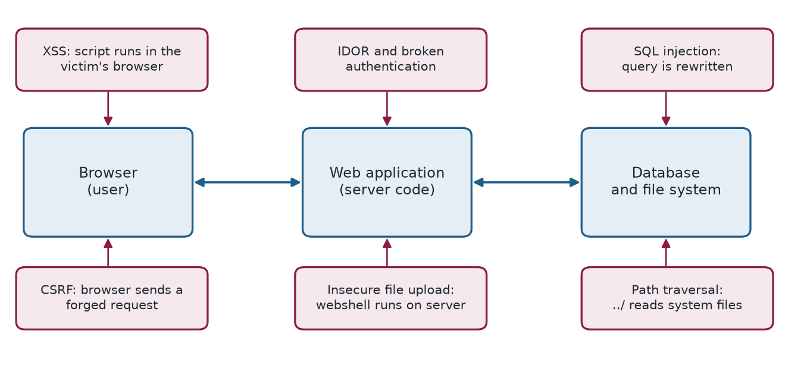

Chapter 3: Web Application Attacks¶
Almost everything we do online runs through a web application, which makes web applications among the most attacked systems in the world. This chapter covers six classic attacks: SQL injection, cross-site scripting, cross-site request forgery, path traversal, insecure file upload and insecure direct object references. All of them share one root cause: the application trusts input or requests that it should have checked. The OWASP Top 10 is the standard list of the most critical web security risks.
Layman analogy
A web application is like a shop with a front counter (the website) and a stockroom (the database and servers behind it). Web app attacks trick the counter staff into giving access to the stockroom, or sneak through doors that were left unlocked.

3.1 SQL Injection (SQLi)¶
An attacker inserts malicious SQL (Structured Query Language) code into an input field — such as a login form, search box, or URL parameter — that the application then executes directly against its database.
Layman analogy
Imagine a restaurant where you order by writing on a form. If you write "Give me a burger. Also, show me every customer's credit card number," a poorly designed system reads the whole form as a command and complies.
How it works:
-- the legitimate query
SELECT * FROM users WHERE username='alice' AND password='secret'
-- the query after the input ' OR '1'='1'-- is pasted in
SELECT * FROM users WHERE username='' OR '1'='1'-- ' AND password=''
The condition OR '1'='1' is always true, so all user records are returned. The attacker logs in as administrator.
Example 3.1: SQL Injection (SQLi)
2009 — Heartland Payment Systems: SQL injection was used to steal 130 million credit card numbers. The breach cost $140 million in settlements and is one of the largest in history.
Defence tip
Use parameterised queries / prepared statements. NEVER concatenate user input directly into SQL strings.
Why the injected query works
The application builds the query by pasting the input between quotes. The attacker's first quote closes the string early, OR '1'='1' adds a condition that is always true, and -- turns the rest of the line (the password check) into a comment. The database cannot tell which part of the text was written by the programmer and which by the attacker, because both arrive as one string.
The cure is to keep code and data apart. A parameterised query sends the SQL text and the values separately, so the input is never interpreted as SQL:
cur.execute(
"SELECT * FROM users WHERE username = %s AND password_hash = %s",
(username, password_hash),
)
3.2 Cross-Site Scripting (XSS)¶
An attacker injects malicious JavaScript code into a web page. When other users view that page, the script executes in their browsers, potentially stealing session cookies, redirecting them to phishing sites, or logging their keystrokes.
Layman analogy
Imagine a public notice board where anyone can post messages. An attacker posts a message with a hidden script inside it. Every person who reads the board triggers the script in their own browser, which secretly sends their private data to the attacker.
- Reflected XSS — malicious script is embedded in a URL and reflected back in the page response
- Stored XSS — malicious script is saved in the database and served to every visitor who views that content
- DOM-based XSS — client-side JavaScript writes attacker-controlled data to the page
Example 3.2: Cross-Site Scripting (XSS)
2014 — eBay XSS attack: Malicious product listings contained JavaScript that redirected buyers to phishing sites when they viewed the listing, stealing login credentials.
Defence tip
Sanitise and encode all user input before displaying it on a page. Implement Content Security Policy (CSP) headers to restrict which scripts can run.
3.3 Cross-Site Request Forgery (CSRF)¶
The attacker tricks an already-authenticated user's browser into making an unauthorised request to a website the user is logged into. The website thinks it's a legitimate action from the user.
Layman analogy
You're logged into your bank. An attacker sends you a link to a "funny cat photo" page. Hidden on that page is an invisible request to your bank: "Transfer $5,000 to account 99999." Your browser — already authenticated with the bank — automatically sends that request. The bank approves it, thinking you initiated it.
Example 3.3: Cross-Site Request Forgery (CSRF)
2008 — YouTube CSRF vulnerability: Attackers could automatically add friends, change account settings, and add videos to favourites on any YouTube account simply by getting the victim to visit an attacker-controlled page.
Defence tip
Use CSRF tokens (unique, random values included in every form submission that the server verifies). Implement the SameSite cookie attribute to prevent cross-origin cookie sending.
3.4 Path / Directory Traversal¶
The attacker navigates outside the intended web folder using "../" sequences (which mean "go up one directory level"), reading sensitive system files that the web server should never expose.
Layman analogy
A hotel gives you a keycard to room 301. A traversal attack is like finding a maintenance corridor that connects your room — via multiple "go up one level" moves — to the master key cabinet in the manager's office.
An attack request looks like this:
https://example.com/files?name=../../../etc/passwd
This navigates three directory levels up from the web folder and reads the Linux system password file.
Example 3.4: Path / Directory Traversal
2019 — Pulse Secure VPN (CVE-2019-11510): A path traversal vulnerability allowed anyone — without any authentication — to retrieve credential files from the VPN server. This was actively exploited to breach hospitals and government agencies during the COVID-19 pandemic.
3.5 Insecure File Upload¶
The attacker uploads a malicious script disguised as a harmless file (like an image) to gain the ability to execute code on the server.
Layman analogy
You upload what appears to be a profile photo named "photo.jpg" — but it's actually a PHP script renamed with a .jpg extension. If the server doesn't properly verify file contents (only checking the extension), it stores the file. The attacker then browses to the file's URL, which executes the script and gives full server control.
Example 3.5: Insecure File Upload
Numerous WordPress plugin vulnerabilities have allowed attackers to upload PHP "webshells" disguised as image files, gaining complete control over the web server and all hosted websites.
3.6 IDOR — Insecure Direct Object Reference¶
The application uses predictable internal identifiers (like sequential numbers in a URL) to reference objects, but fails to verify whether the requesting user is actually authorised to access that specific object.
Layman analogy
A delivery app shows your order at the URL /orders/1001. You change it to /orders/1000 and see a stranger's full name, home address, and order contents. The server never checked whether order 1000 belongs to you.
Example 3.6: IDOR — Insecure Direct Object Reference
2019 — Instagram IDOR: Security researchers discovered they could access any user's private posts, stories, and account information simply by manipulating ID parameters in API requests.
3.7 Defence tips¶
- Validate and sanitise ALL user-supplied input on the server side — never trust client input
- Use parameterised queries for all database operations to prevent SQL injection
- Implement CSRF tokens on all forms that change data or perform actions
- Validate file uploads by checking actual file content (magic bytes), not just file extension
- Apply proper authorisation checks on every single API endpoint
- Deploy a Web Application Firewall (WAF) to detect and block common attack patterns
3.8 Summary¶
- Web attacks exploit trust: the application trusts user input (SQLi, XSS, path traversal, file upload), trusts the browser's credentials (CSRF) or trusts identifiers it never checks (IDOR).
- SQL injection is prevented by parameterised queries; XSS by encoding output and a Content Security Policy; CSRF by tokens and SameSite cookies.
- Path traversal and insecure upload are prevented by validating paths and checking file content, not just the extension; IDOR by an authorisation check on every request.
- A web application firewall helps, but cannot replace secure coding.
3.9 Exercises¶
-
A login query is built as SELECT * FROM users WHERE username='\(u' AND password='\)p'. The attacker enters
' OR '1'='1'--as the username. Write the resulting query and explain why it returns every user.Answer
The query becomes
SELECT * FROM users WHERE username='' OR '1'='1'-- ' AND password=''. The condition'1'='1'is always true, and--turns the rest of the line into a comment, so the password check disappears. Every row matches and the attacker is logged in, often as the first (administrator) record. -
Distinguish reflected, stored and DOM-based XSS.
Answer
Reflected: the script is in a link and is reflected back in the page response. Stored: the script is saved in the database and served to every visitor who views that content. DOM-based: client-side JavaScript writes attacker-controlled data into the page.
-
Why does CSRF succeed even though the attacker never sees the victim's cookie? Name two defences.
Answer
The victim's browser automatically attaches its authenticated session cookie to any request to the bank, including one triggered by a hidden form or image on the attacker's page. The server cannot tell the request was not intended. Defences: unique CSRF tokens checked by the server, and the SameSite cookie attribute.
-
A site shows your invoice at
/invoice?id=2041. Changing the number to 2040 shows another customer's invoice. Name the flaw and the fix.Answer
This is an insecure direct object reference (IDOR). The fix is an authorisation check on every request, confirming that the logged-in user owns the invoice, and not relying on the identifier being hard to guess.
-
Why is checking the file extension not enough to make an upload safe?
Answer
An attacker can rename a PHP script to
shell.jpg. If the server only checks the extension it stores the file, and requesting it can execute the code. Validate the actual content (magic bytes), store uploads outside the web root, and do not allow them to execute.